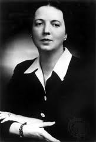

"Cita".
AUTOR, Obra;
Fecha de publicación
LOUISE BOGAN
Introducción
Biografía
Nació en 1897 en Maine y murió en 1970 en Nueva York. Era de origen irlandés y de clase baja, y estudió gracias a una benefactora privada un año en la universidad de Boston. Después dse trasladó a Nueva York y a Viena para formarse como poeta. Al regresar a los EEUU publicó su primer libro Body of This Death (1923), y The New Yorker la contrató como editora y crítica de poesía. Bogan publicaría cinco libros más de poesía que recogería en The Blue Estuaries (1968). De manera póstuma publicó Journey Around my Room (1980), que contiene varias piezas autobiográficas.
Poemas
MEDUSA
Había llegado a la casa, en una caverna de árboles,
frente a un cielo puro.
Todo se movía -una campana colgaba lista para ser tañida.
El sol y sus reflejos pasaron rodando.
Entonces los ojos desnudos se encontraban ante mí
y los cabellos siseantes
en la ventana, entrevistos a través de una puerta.
Los ojos rígidos sin pestañas y serpientes en la frente
recortadas en el aire.
Desde ahora esta es una escena muerta para siempre.
Nada volverá a moverse.
El final no alumbrará más que esto,
ni siquiera la lluvia empañará la imagen.
El agua seguirá cayendo y dejando de caer.
y la campana no emitirá sonido alguno.
La hierba seguirá convirtiéndose en heno
desde lo profundo del suelo.
Y yo seguiré aquí como una sombra,
bajo el día en prefecto equilibrio,
mis ojos sobre el polvo amarillo que levanta el viento,
y que no se dispersa.
Louise Bogan The Golden Journey, 1965.